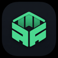

Free
$0
- Up to 3 projects
- Start / Stop / Open
- Basic scan

DevDockAll your local stacks. One workspace.
Scan projects. Start API + web + admin together. Watch ports from the menu bar.
macOS 14+ · Direct download · Free for 3 projects
Running
npm run start:dev
Replace five terminals, one Docker Desktop click, and a sticky note of ports.
hqtv-app/web.Pay once. Own the workflow.
Apple Silicon / Intel. First open may need Right-click → Open until notarized builds ship. Free build is sent by email for now (source stays private).